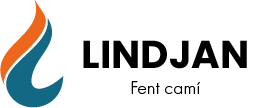

03
Identitat Visual
El sistema de marca:
El sistema de marca:
ordre, força
i confiança
La nova identitat trenca amb la imatge provisional per posicionar Lindjan com una empresa referent del sector energètic. Inspirada en la claredat de grans corporatives com Nedgia o Endesa, la marca transmet ordre tècnic, eficiència i proximitat.
